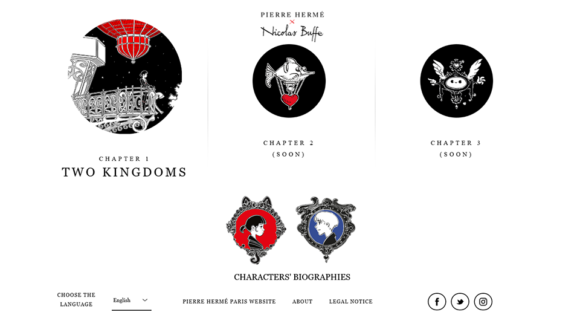
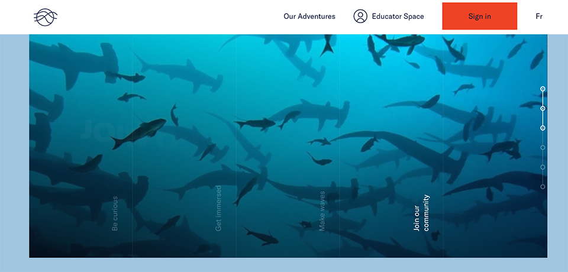
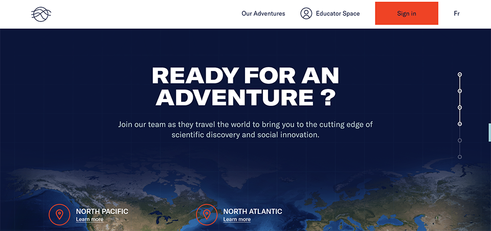
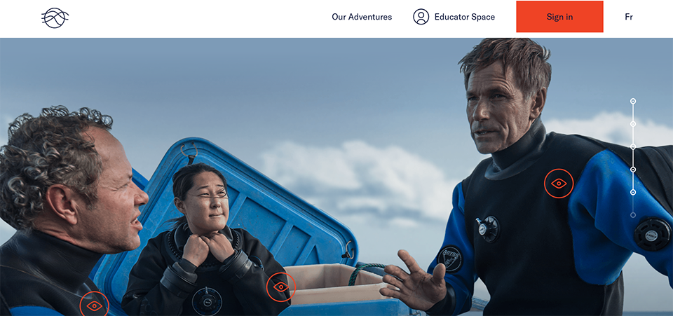

A Story of the Kingdoms
of the Moon and of the Sun

This website provides you a great experience through an exclusive interactive adventure to be part of a digital story, “A Story of the Kingdoms of the Moon and of the Sun” where you can be the narrator. It is great animation website for children. This is an innovative storybook of this generation displayed in a website designed by French artists, Pierre Hermé x Nicolas Buffe. They published the site in 2016. The story offers such amazing illustrations to imagine a universe combining ancestral myths, manga culture, Renaissance and Baroque art altogether. Everything is art in this website even the loading session is an illustration. The typography is also great as it matches the theme of the story. The illustrations are not just plain 2D drawings but are interactive and animated making it more interesting. The story introduces its characters with illustrations and the plot in every page is short and simple. It gives you an immersive experience and the story is easy to follow as the drawings shows actions as well. You can also choose different language between English, Japanese and French. You can start the story in just one click of “Start the Adventure” button. There is a button you can drag to continue the story and it there is a guide pointing you to that button to easily navigate the website. On the upper left-hand corner, there is a three-bar icon where you can see all chapters. The story is not yet finish as chapters 2 and 3 haven’t been published yet. But I was amazed by this interactive design when I tried it. The only problem here is it does not work on mobile screens but only on desktop but resizing is not a problem even if you drag it to its smallest size, it will still retain its graphic and animation.
Ocean School

Another website I have found that offers interactive adventure is the “Ocean School.” This time, the website provides educational experience about the ocean through storytelling techniques and interactive media. This is perfect for all ages especially children as it will be a fun learning experience for them. It allows visitors to explore and learn more about the oceans and raise environmental awareness. This website displays 3D images of marine animals, fluid effects and animations. It has a simple color schemes of blue and white which is a typical ocean color. This website is easy as it has interactive guide to follow, the linear navigation design on the right side of the screen by just simply scrolling the mouse. Any navigation bar in this site especially on the top also has an amazing hover animation as it waves away whenever you point the mouse. It can also be displayed in mobile screens.

The design of this photo gallery is very interactive. The way the navigation bar is displayed is quite interesting and minimalistic. As you click the bars here, the image will change.

Another interesting part in this website is it has map where you can learn more about the ocean in North Atlantic, North Pacific and Open Ocean about the scientific discovery and social innovation that the team had experience to these places. After clicking any of these places, it will direct you to a new window. It is interesting to hear the deep ocean sound that you will here when you got directed to a new window to start your educational experience.

I find this interesting to as they introduce their team by clicking on the eye button and the profile of that team member will pop out. A quick overview about them. You can also click the arrows to swipe to the next team member.